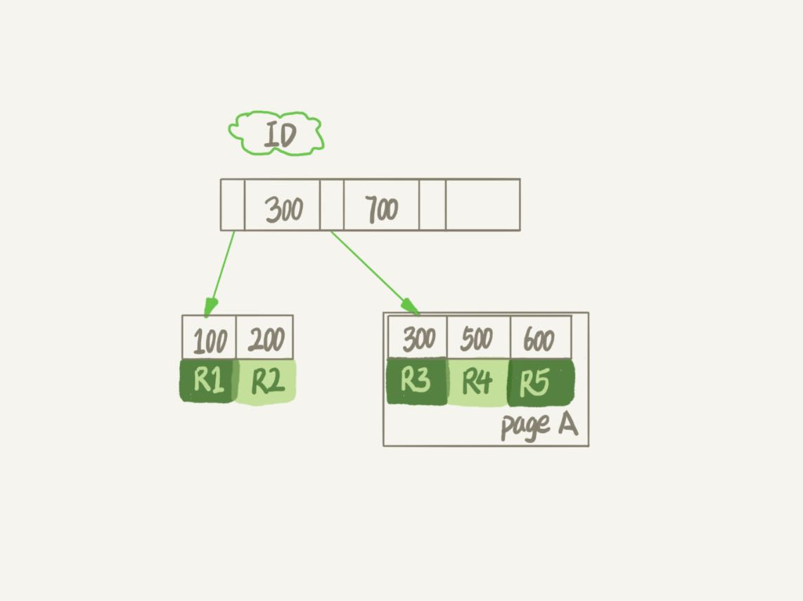
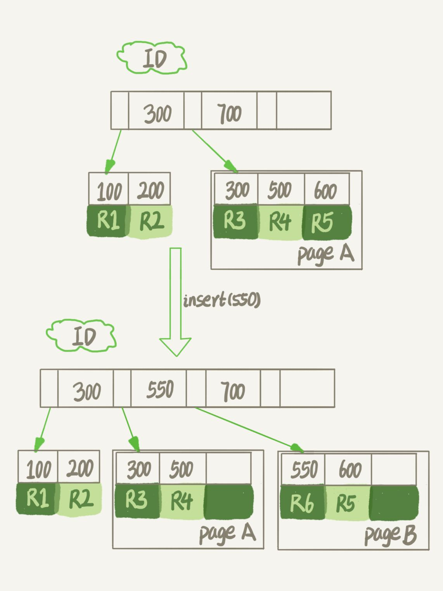
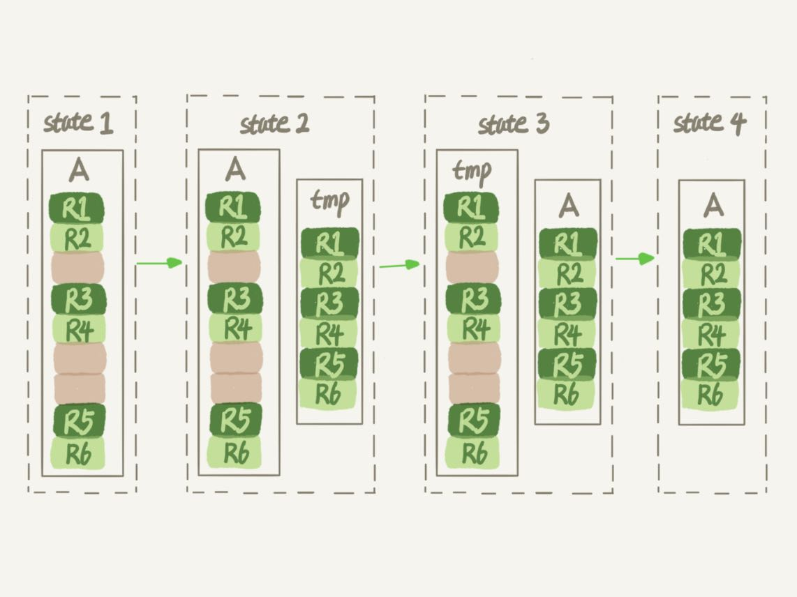
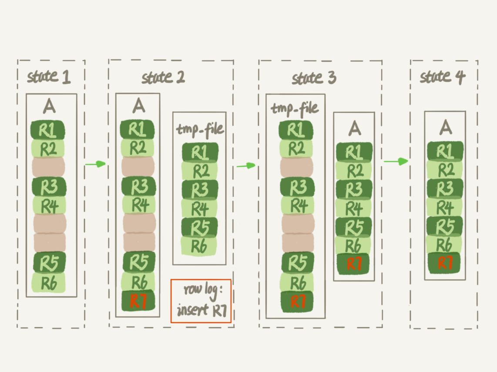

经常会有同学来问我，我的数据库占用空间太大，我把一个最大的表删掉了一半的数据，怎么表文件的大小还是没变？
那么今天，我就和你聊聊数据库表的空间回收，看看如何解决这个问题。
这里，我们还是针对MySQL中应用最广泛的InnoDB引擎展开讨论。一个InnoDB表包含两部分，即：表结构定义和数据。在MySQL 8.0版本以前，表结构是存在以.frm为后缀的文件里。而MySQL 8.0版本，则已经允许把表结构定义放在系统数据表中了。因为表结构定义占用的空间很小，所以我们今天主要讨论的是表数据。
接下来，我会先和你说明为什么简单地删除表数据达不到表空间回收的效果，然后再和你介绍正确回收空间的方法。
参数innodb_file_per_table
表数据既可以存在共享表空间里，也可以是单独的文件。这个行为是由参数innodb_file_per_table控制的：
- 这个参数设置为OFF表示的是，表的数据放在系统共享表空间，也就是跟数据字典放在一起；
- 这个参数设置为ON表示的是，每个InnoDB表数据存储在一个以 .ibd为后缀的文件中。
从MySQL 5.6.6版本开始，它的默认值就是ON了。
我建议你不论使用MySQL的哪个版本，都将这个值设置为ON。因为，一个表单独存储为一个文件更容易管理，而且在你不需要这个表的时候，通过drop table命令，系统就会直接删除这个文件。而如果是放在共享表空间中，即使表删掉了，空间也是不会回收的。
所以，将innodb_file_per_table设置为ON，是推荐做法，我们接下来的讨论都是基于这个设置展开的。
我们在删除整个表的时候，可以使用drop table命令回收表空间。但是，我们遇到的更多的删除数据的场景是删除某些行，这时就遇到了我们文章开头的问题：表中的数据被删除了，但是表空间却没有被回收。
我们要彻底搞明白这个问题的话，就要从数据删除流程说起了。
数据删除流程

假设，我们要删掉R4这个记录，InnoDB引擎只会把R4这个记录标记为删除。如果之后要再插入一个ID在300和600之间的记录时，可能会复用这个位置。但是，磁盘文件的大小并不会缩小。
现在，你已经知道了InnoDB的数据是按页存储的，那么如果我们删掉了一个数据页上的所有记录，会怎么样？
答案是，整个数据页就可以被复用了。
但是，数据页的复用跟记录的复用是不同的。
记录的复用，只限于符合范围条件的数据。比如上面的这个例子，R4这条记录被删除后，如果插入一个ID是400的行，可以直接复用这个空间。但如果插入的是一个ID是800的行，就不能复用这个位置了。
而当整个页从B+树里面摘掉以后，可以复用到任何位置。以图1为例，如果将数据页page A上的所有记录删除以后，page A会被标记为可复用。这时候如果要插入一条ID=50的记录需要使用新页的时候，page A是可以被复用的。
如果相邻的两个数据页利用率都很小，系统就会把这两个页上的数据合到其中一个页上，另外一个数据页就被标记为可复用。
进一步地，如果我们用delete命令把整个表的数据删除呢？结果就是，所有的数据页都会被标记为可复用。但是磁盘上，文件不会变小。
你现在知道了，delete命令其实只是把记录的位置，或者数据页标记为了“可复用”，但磁盘文件的大小是不会变的。也就是说，通过delete命令是不能回收表空间的。这些可以复用，而没有被使用的空间，看起来就像是“空洞”。
实际上，不止是删除数据会造成空洞，插入数据也会。
如果数据是按照索引递增顺序插入的，那么索引是紧凑的。但如果数据是随机插入的，就可能造成索引的数据页分裂。
假设图1中page A已经满了，这时我要再插入一行数据，会怎样呢？

可以看到，由于page A满了，再插入一个ID是550的数据时，就不得不再申请一个新的页面page B来保存数据了。页分裂完成后，page A的末尾就留下了空洞（注意：实际上，可能不止1个记录的位置是空洞）。
另外，更新索引上的值，可以理解为删除一个旧的值，再插入一个新值。不难理解，这也是会造成空洞的。
也就是说，经过大量增删改的表，都是可能是存在空洞的。所以，如果能够把这些空洞去掉，就能达到收缩表空间的目的。
而重建表，就可以达到这样的目的。
重建表
试想一下，如果你现在有一个表A，需要做空间收缩，为了把表中存在的空洞去掉，你可以怎么做呢？
你可以新建一个与表A结构相同的表B，然后按照主键ID递增的顺序，把数据一行一行地从表A里读出来再插入到表B中。
由于表B是新建的表，所以表A主键索引上的空洞，在表B中就都不存在了。显然地，表B的主键索引更紧凑，数据页的利用率也更高。如果我们把表B作为临时表，数据从表A导入表B的操作完成后，用表B替换A，从效果上看，就起到了收缩表A空间的作用。
这里，你可以使用alter table A engine=InnoDB命令来重建表。在MySQL 5.5版本之前，这个命令的执行流程跟我们前面描述的差不多，区别只是这个临时表B不需要你自己创建，MySQL会自动完成转存数据、交换表名、删除旧表的操作。

显然，花时间最多的步骤是往临时表插入数据的过程，如果在这个过程中，有新的数据要写入到表A的话，就会造成数据丢失。因此，在整个DDL过程中，表A中不能有更新。也就是说，这个DDL不是Online的。
而在MySQL 5.6版本开始引入的Online DDL，对这个操作流程做了优化。
我给你简单描述一下引入了Online DDL之后，重建表的流程：
- 建立一个临时文件，扫描表A主键的所有数据页；
- 用数据页中表A的记录生成B+树，存储到临时文件中；
- 生成临时文件的过程中，将所有对A的操作记录在一个日志文件（row log）中，对应的是图中state2的状态；
- 临时文件生成后，将日志文件中的操作应用到临时文件，得到一个逻辑数据上与表A相同的数据文件，对应的就是图中state3的状态；
- 用临时文件替换表A的数据文件。

可以看到，与图3过程的不同之处在于，由于日志文件记录和重放操作这个功能的存在，这个方案在重建表的过程中，允许对表A做增删改操作。这也就是Online DDL名字的来源。
确实，图4的流程中，alter语句在启动的时候需要获取MDL写锁，但是这个写锁在真正拷贝数据之前就退化成读锁了。
为什么要退化呢？为了实现Online，MDL读锁不会阻塞增删改操作。
那为什么不干脆直接解锁呢？为了保护自己，禁止其他线程对这个表同时做DDL。
而对于一个大表来说，Online DDL最耗时的过程就是拷贝数据到临时表的过程，这个步骤的执行期间可以接受增删改操作。所以，相对于整个DDL过程来说，锁的时间非常短。对业务来说，就可以认为是Online的。
需要补充说明的是，上述的这些重建方法都会扫描原表数据和构建临时文件。对于很大的表来说，这个操作是很消耗IO和CPU资源的。因此，如果是线上服务，你要很小心地控制操作时间。如果想要比较安全的操作的话，我推荐你使用GitHub开源的gh-ost来做。
Online 和 inplace
说到Online，我还要再和你澄清一下它和另一个跟DDL有关的、容易混淆的概念inplace的区别。
你可能注意到了，在图3中，我们把表A中的数据导出来的存放位置叫作tmp_table。这是一个临时表，是在server层创建的。
在图4中，根据表A重建出来的数据是放在“tmp_file”里的，这个临时文件是InnoDB在内部创建出来的。整个DDL过程都在InnoDB内部完成。对于server层来说，没有把数据挪动到临时表，是一个“原地”操作，这就是“inplace”名称的来源。
所以，我现在问你，如果你有一个1TB的表，现在磁盘间是1.2TB，能不能做一个inplace的DDL呢？
答案是不能。因为，tmp_file也是要占用临时空间的。
我们重建表的这个语句alter table t engine=InnoDB，其实隐含的意思是：
alter table t engine=innodb,ALGORITHM=inplace;
跟inplace对应的就是拷贝表的方式了，用法是：
alter table t engine=innodb,ALGORITHM=copy;
当你使用ALGORITHM=copy的时候，表示的是强制拷贝表，对应的流程就是图3的操作过程。
但我这样说你可能会觉得，inplace跟Online是不是就是一个意思？
其实不是的，只是在重建表这个逻辑中刚好是这样而已。
比如，如果我要给InnoDB表的一个字段加全文索引，写法是：
alter table t add FULLTEXT(field_name);
这个过程是inplace的，但会阻塞增删改操作，是非Online的。
如果说这两个逻辑之间的关系是什么的话，可以概括为：
- DDL过程如果是Online的，就一定是inplace的；
- 反过来未必，也就是说inplace的DDL，有可能不是Online的。截止到MySQL 8.0，添加全文索引（FULLTEXT index）和空间索引(SPATIAL index)就属于这种情况。
最后，我们再延伸一下。
在第10篇文章《MySQL为什么有时候会选错索引》的评论区中，有同学问到使用optimize table、analyze table和alter table这三种方式重建表的区别。这里，我顺便再简单和你解释一下。
- 从MySQL 5.6版本开始，alter table t engine = InnoDB（也就是recreate）默认的就是上面图4的流程了；
- analyze table t 其实不是重建表，只是对表的索引信息做重新统计，没有修改数据，这个过程中加了MDL读锁；
- optimize table t 等于recreate+analyze。
小结
今天这篇文章，我和你讨论了数据库中收缩表空间的方法。
现在你已经知道了，如果要收缩一个表，只是delete掉表里面不用的数据的话，表文件的大小是不会变的，你还要通过alter table命令重建表，才能达到表文件变小的目的。我跟你介绍了重建表的两种实现方式，Online DDL的方式是可以考虑在业务低峰期使用的，而MySQL 5.5及之前的版本，这个命令是会阻塞DML的，这个你需要特别小心。
最后，又到了我们的课后问题时间。
假设现在有人碰到了一个“想要收缩表空间，结果适得其反”的情况，看上去是这样的：
- 一个表t文件大小为1TB；
- 对这个表执行 alter table t engine=InnoDB；
- 发现执行完成后，空间不仅没变小，还稍微大了一点儿，比如变成了1.01TB。
你觉得可能是什么原因呢 ？
你可以把你觉得可能的原因写在留言区里，我会在下一篇文章的末尾把大家描述的合理的原因都列出来，以后其他同学就不用掉到这样的坑里了。感谢你的收听，也欢迎你把这篇文章分享给更多的朋友一起阅读。
上期问题时间
在上期文章最后，我留给你的问题是，如果一个高配的机器，redo log设置太小，会发生什么情况。
每次事务提交都要写redo log，如果设置太小，很快就会被写满，也就是下面这个图的状态，这个“环”将很快被写满，write pos一直追着CP。

这时候系统不得不停止所有更新，去推进checkpoint。
这时，你看到的现象就是磁盘压力很小，但是数据库出现间歇性的性能下跌。
评论区留言点赞板：
@某、人 给了一个形象的描述，而且提到了，在这种情况下，连change buffer的优化也失效了。因为checkpoint一直要往前推，这个操作就会触发merge操作，然后又进一步地触发刷脏页操作；有几个同学提到了内存淘汰脏页，对应的redo log的操作，这个我们会在后面的文章中展开，大家可以先看一下 @melon 同学的描述了解一下；@算不出流源 提到了“动态平衡”，其实只要出现了这种“平衡”，意味着本应该后台的操作，就已经影响了业务应用，属于有损失的平衡。